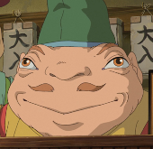

Chichiyaku
Chichiyaku é um personagem recorrente no filme "A Viagem de Chihiro" do Estúdio Ghibli. Ele é um personagem superior na hierarquia do balneário.
Chichiyaku aparece pela primeira vez quando Haku tenta colocar Chihiro Ogino em um departamento entre os trabalhadores, no início Chichiyaku se recusa a aceitá-la, mas concorda em tê-la quando soube que ela seria a assistente de Lin, o que ele acha engraçado.
Personalidade
No filme Chichiyaku parece às vezes ser egoísta, mas com a ajuda de Chihiro no final do filme, ele parece ter mais humildade. Entre muitos dos outros espíritos, ele primeiro trata Chihiro Ogino com descontentamento devido ao fato dela ser humana, mas aos poucos vem a aceitar e até a torcer por ela enquanto ela ajuda o Espírito do Rio e salva o Balneário do Sem Rosto.
Aparência física
No filme, Chichiyaku tem olhos alaranjados, pele de salmão-laranja, e um pequeno bigode vermelho-alaranjado. Como muitos dos trabalhadores do balneário, ele se parece com um sapo.